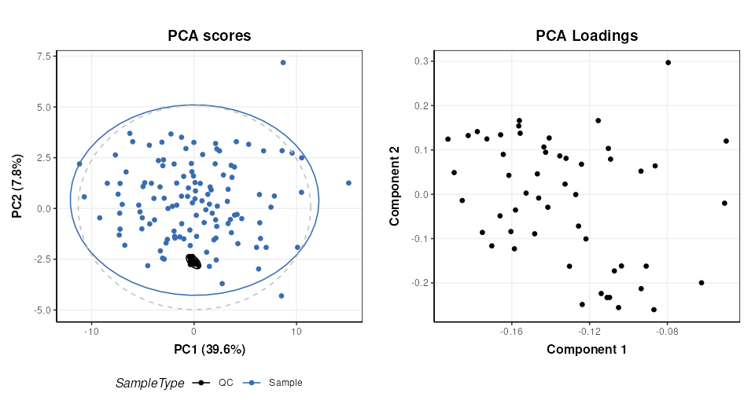
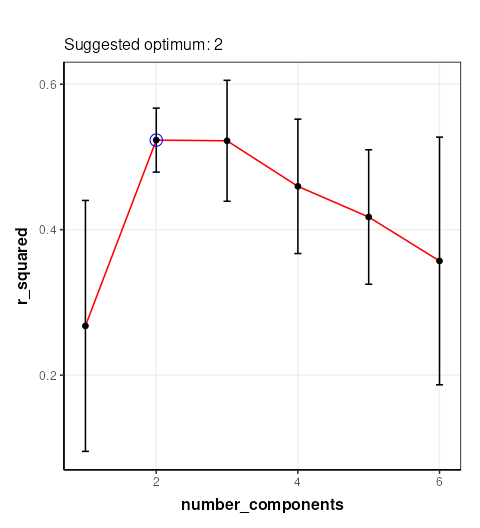
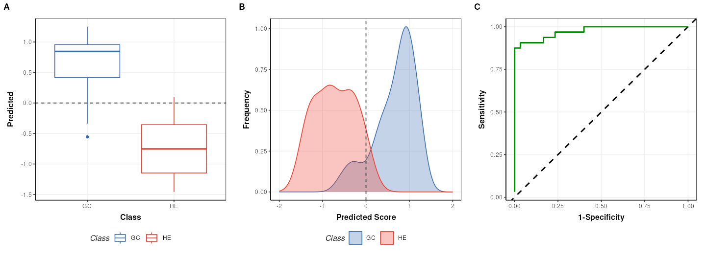
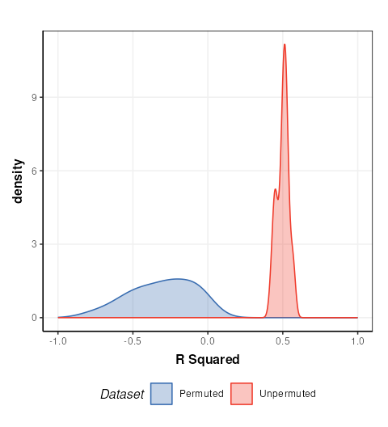
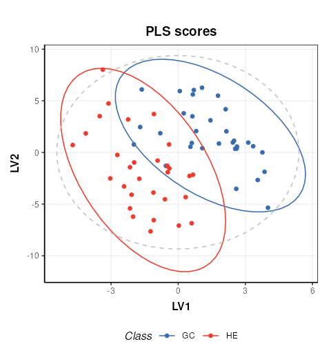
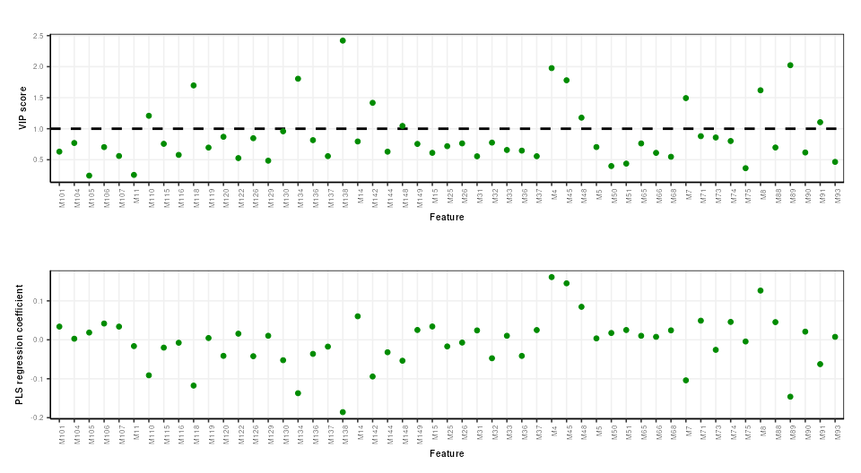

Univariate and multivariate statistical analysis of a NMR-based clinical metabolomics dataset.
Gavin R Lloyd
Phenome Centre Birmingham, University of Birmingham, UKg.r.lloyd@bham.ac.uk
Andris Jankevics
Phenome Centre Birmingham, University of Birmingham, UKa.jankevics@bham.ac.uk
Ralf J Weber
Phenome Centre Birmingham, University of Birmingham, UKr.j.weber@bham.ac.uk
2026-02-21
Source:vignettes/articles/univariate_clinical_nmr.Rmd
univariate_clinical_nmr.RmdIntroduction
The purpose of this vignette is to demonstrate the different functionalities and methods that are available as part of the structToolbox and reproduce the data analysis reported in Mendez et al., (2020) and Chan et al., (2016).
Dataset
The 1H-NMR dataset used and described in Mendez et al., (2020) and in this vignette contains processed spectra of urine samples obtained from gastric cancer and healthy patients Chan et al., (2016). The experimental raw data is available through Metabolomics Workbench (PR000699) and the processed version is available from here as an Excel data file.
As a first step we need to reorganise and convert the Excel data file
into a DatasetExperiment object. Using the openxlsx package
the file can be read directly into an R data.frame and then
manipulated as required.
url = 'https://github.com/CIMCB/MetabWorkflowTutorial/raw/master/GastricCancer_NMR.xlsx'
# read in file directly from github...
# X=read.xlsx(url)
# ...or use BiocFileCache
path = bfcrpath(bfc,url)
X = read.xlsx(path)
# sample meta data
SM=X[,1:4]
rownames(SM)=SM$SampleID
# convert to factors
SM$SampleType=factor(SM$SampleType)
SM$Class=factor(SM$Class)
# keep a numeric version of class for regression
SM$Class_num = as.numeric(SM$Class)
## data matrix
# remove meta data
X[,1:4]=NULL
rownames(X)=SM$SampleID
# feature meta data
VM=data.frame(idx=1:ncol(X))
rownames(VM)=colnames(X)
# prepare DatasetExperiment
DE = DatasetExperiment(
data=X,
sample_meta=SM,
variable_meta=VM,
description='1H-NMR urinary metabolomic profiling for diagnosis of gastric cancer',
name='Gastric cancer (NMR)')
DE## A "DatasetExperiment" object
## ----------------------------
## name: Gastric cancer (NMR)
## description: 1H-NMR urinary metabolomic profiling for diagnosis of gastric cancer
## data: 140 rows x 149 columns
## sample_meta: 140 rows x 5 columns
## variable_meta: 149 rows x 1 columnsData pre-processing and quality assessment
It is good practice to remove any features that may be of low quality, and to assess the quality of the data in general. In the Tutorial features with QC-RSD > 20% and where more than 10% of the features are missing are retained.
# prepare model sequence
M = rsd_filter(rsd_threshold=20,qc_label='QC',factor_name='Class') +
mv_feature_filter(threshold = 10,method='across',factor_name='Class')
# apply model
M = model_apply(M,DE)
# get the model output
filtered = predicted(M)
# summary of filtered data
filtered## A "DatasetExperiment" object
## ----------------------------
## name: Gastric cancer (NMR)
## description: 1H-NMR urinary metabolomic profiling for diagnosis of gastric cancer
## data: 140 rows x 53 columns
## sample_meta: 140 rows x 5 columns
## variable_meta: 53 rows x 1 columnsNote there is an additional feature vs the the processing reported by Mendez et. al. because the filters here use >= or <= instead of > and <.
After suitable scaling and transformation PCA can be used to assess data quality. It is expected that the biological variance (samples) will be larger than the technical variance (QCs). In the workflow that we are reproducing (link) the following steps were applied:
- log10 transform
- autoscaling (scaled to unit variance)
- knn imputation (3 neighbours)
The transformed and scaled matrix in then used as input to PCA. Using
struct we can chain all of these steps into a single model
sequence.
# prepare the model sequence
M = log_transform(base = 10) +
autoscale() +
knn_impute(neighbours = 3) +
PCA(number_components = 10)
# apply model sequence to data
M = model_apply(M,filtered)
# get the transformed, scaled and imputed matrix
TSI = predicted(M[3])
# scores plot
C = pca_scores_plot(factor_name = 'SampleType')
g1 = chart_plot(C,M[4])
# loadings plot
C = pca_loadings_plot()
g2 = chart_plot(C,M[4])
plot_grid(g1,g2,align='hv',nrow=1,axis='tblr')
Univariate statistics
structToolbox provides a number of objects for ttest,
counting numbers of features etc. For brevity only the ttest is
calculated for comparison with the workflow we are following (link).
The QC samples need to be excluded, and the data reduced to only the GC
and HE groups.
# prepare model
TT = filter_smeta(mode='include',factor_name='Class',levels=c('GC','HE')) +
ttest(alpha=0.05,mtc='fdr',factor_names='Class')
# apply model
TT = model_apply(TT,filtered)
# keep the data filtered by group for later
filtered = predicted(TT[1])
# convert to data frame
out=as_data_frame(TT[2])
# show first few features
head(out)## t_statistic t_p_value t_significant estimate.mean.GC estimate.mean.HE
## M4 3.5392652 0.008421042 TRUE 51.73947 26.47778
## M5 -1.4296604 0.410396437 FALSE 169.91500 265.11860
## M7 -2.7456506 0.051494976 FALSE 53.98718 118.52558
## M8 2.1294198 0.178392032 FALSE 79.26750 54.39535
## M11 -0.5106536 0.776939682 FALSE 171.27949 201.34390
## M14 1.4786810 0.403091881 FALSE 83.90250 61.53171
## lower upper
## M4 10.961769 39.56162
## M5 -228.454679 38.04747
## M7 -111.468619 -17.60818
## M8 1.543611 48.20069
## M11 -147.434869 87.30604
## M14 -7.835950 52.57754Multivariate statistics and machine learning
Training and Test sets
Splitting data into training and test sets is an important aspect of
machine learning. In structToolbox this is implemented
using the split_data object for random subsampling across
the whole dataset, and stratified_split for splitting based
on group sizes, which is the approach used by Mendez et al.
# prepare model
M = stratified_split(p_train=0.75,factor_name='Class')
# apply to filtered data
M = model_apply(M,filtered)
# get data from object
train = M$training
train## A "DatasetExperiment" object
## ----------------------------
## name: Gastric cancer (NMR)
## (Training set)
## description: • 1H-NMR urinary metabolomic profiling for diagnosis of gastric cancer
## • A subset of the data has been selected as a training set
## data: 62 rows x 53 columns
## sample_meta: 62 rows x 5 columns
## variable_meta: 53 rows x 1 columns
cat('\n')
test = M$testing
test## A "DatasetExperiment" object
## ----------------------------
## name: Gastric cancer (NMR)
## (Testing set)
## description: • 1H-NMR urinary metabolomic profiling for diagnosis of gastric cancer
## • A subset of the data has been selected as a test set
## data: 21 rows x 53 columns
## sample_meta: 21 rows x 5 columns
## variable_meta: 53 rows x 1 columnsOptimal number of PLS components
In Mendez et al a k-fold cross-validation is used to determine the
optimal number of PLS components. 100 bootstrap iterations are used to
generate confidence intervals. In strucToolbox these are
implemented using “iterator” objects, that can be combined with model
objects. R2 is used as the metric for optimisation, so the
PLSR model in structToolbox will be used. For speed only 10
bootstrap iterations are used here.
# scale/transform training data
M = log_transform(base = 10) +
autoscale() +
knn_impute(neighbours = 3,by='samples')
# apply model
M = model_apply(M,train)
# get scaled/transformed training data
train_st = predicted(M)
# prepare model sequence
MS = grid_search_1d(
param_to_optimise = 'number_components',
search_values = as.numeric(c(1:6)),
model_index = 2,
factor_name = 'Class_num',
max_min = 'max') *
permute_sample_order(
number_of_permutations = 10) *
kfold_xval(
folds = 5,
factor_name = 'Class_num') *
(mean_centre(mode='sample_meta')+
PLSR(factor_name='Class_num'))
# run the validation
MS = struct::run(MS,train_st,r_squared())
#
C = gs_line()
chart_plot(C,MS)
The chart plotted shows Q2, which is comparable with Figure 13 of Mendez et al . Two components were selected by Mendez et al, so we will use that here.
PLS model evalutation
To evaluate the model for discriminant analysis in structToolbox the
PLSDA model is appropriate.
# prepare the discriminant model
P = PLSDA(number_components = 2, factor_name='Class')
# apply the model
P = model_apply(P,train_st)
# charts
C = plsda_predicted_plot(factor_name='Class',style='boxplot')
g1 = chart_plot(C,P)
C = plsda_predicted_plot(factor_name='Class',style='density')
g2 = chart_plot(C,P)+xlim(c(-2,2))
C = plsda_roc_plot(factor_name='Class')
g3 = chart_plot(C,P)
plot_grid(g1,g2,g3,align='vh',axis='tblr',nrow=1, labels=c('A','B','C'))
## A "AUC" object
## --------------
## name: Area under ROC curve
## description: The area under the ROC curve of a classifier is estimated using the trapezoid method.
## value: 0.9739583Note that the default cutoff in A and B of the figure above for the
PLS models in structToolbox is 0, because groups are
encoded as +/-1. This has no impact on the overall performance of the
model.
Permutation test
A permutation test can be used to assess how likely the observed
result is to have occurred by chance. In structToolbox
permutation_test is an iterator object that can be combined
with other iterators and models.
# model sequence
MS = permutation_test(number_of_permutations = 20,factor_name = 'Class_num') *
kfold_xval(folds = 5,factor_name = 'Class_num') *
(mean_centre(mode='sample_meta') + PLSR(factor_name='Class_num', number_components = 2))
# run iterator
MS = struct::run(MS,train_st,r_squared())
# chart
C = permutation_test_plot(style = 'density')
chart_plot(C,MS) + xlim(c(-1,1)) + xlab('R Squared')
This plot is comparable to the bottom half of Figure 17 in Mendez et. al.. The unpermuted (true) Q2 values are consistently better than the permuted (null) models. i.e. the model is reliable.
PLS projection plots
PLS can also be used to visualise the model and interpret the latent variables.
# prepare the discriminant model
P = PLSDA(number_components = 2, factor_name='Class')
# apply the model
P = model_apply(P,train_st)
C = pls_scores_plot(components=c(1,2),factor_name = 'Class')
chart_plot(C,P)
PLS feature importance
Regression coefficients and VIP scores can be used to estimate the importance of individual features to the PLS model. In Mendez et al bootstrapping is used to estimate the confidence intervals, but for brevity here we will skip this.
# prepare chart
C = pls_vip_plot(ycol = 'HE')
g1 = chart_plot(C,P)
C = pls_regcoeff_plot(ycol='HE')
g2 = chart_plot(C,P)
plot_grid(g1,g2,align='hv',axis='tblr',nrow=2)